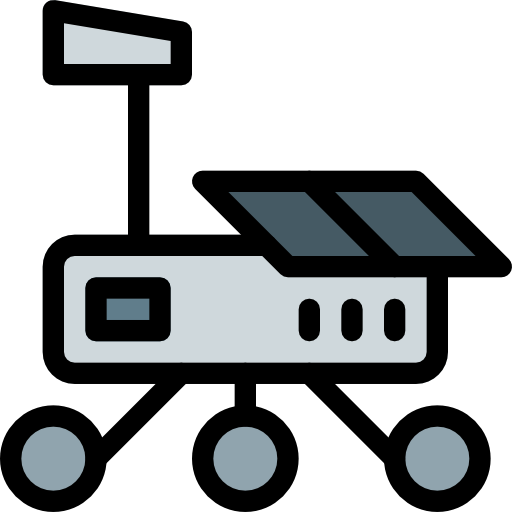

Meus Projetos


Este site ainda não foi portado para dispostivos mobile
Meu nome é Pedro Lucas de Souza Cremonini, tenho 17 anos, sou nativo de Paranavaí(Paraná) e como padrão da minha geração, tive contato com tecnologia desde muito cedo, principalmente por meio de jogos, porém não demorou muito para meu interesse ir além de jogos. Com meus 8 anos comecei a desmontar todos meus brinquedos que quebravam para tentar arruma-los, o que me fez por muito tempo acreditar que queria fazer engenharia robotica, sonho que corri atrás, fiz diversos cursos de robotica, inclusive troquei repetidamente de escolas por causa disso, porem notei que o que eu mais divertia não era fazendo robos, e sim pensando em como eles iriam funcionar, e assim, nasceu a minha vontade incessante de evolução, nunca parando de estudar sobre tecnologia e evoluir. Meu sonho é tornar a terra um lugar mais evoluido, onde eu possa olhar e ver a tecnologia na mão de todos e em todos os lugares, sonho que o mundo veja o motivo de meu amor por tecnologia, onde tudo pode ter seu proprio "jeitinho".
Conhecimento intermediario em partes tecnicas de desenvolvimento, como por exemplo: usar e fazer Fluxogramas, termos tecnicos, estudo sobre desenvolvimento em equipe veloz e padronização de codigos, junto nisso desenvolvi diversas habilidades de trabalho de equipe, como separação efetiva de trabalho, utilização de github e etc
Diversos cursos de logica de programação, grande costume com solução de problemas com metodos criativos
Primeira linguagem aprendida, exercicios com construção fisica me proporcionaram maior treinamento de logica e de solução de problemas
Diversos cursos sobre Front-End basico
Grande costume com python, dois cursos ja finalizados e um sendo concluido, conhecimentos em criação e gerenciamento de servers por python
Grandes periodos de treino com manuseamento de banco de dados, conhecimento base de postgres e MSSQL, conhecimento intermediario com MYSQL, grande costume com a plataforma PhpMyAdmin
Vivencia desde de cedo com ambiente em ingles, inclusive com inglês informal
Antigo membro do Interact(ordem de jovens do Rotary), onde aprendi lições importantes sobre trabalho em equipe e empatia com o proximo, vindas de diversos trabalhos voluntarios e eventos